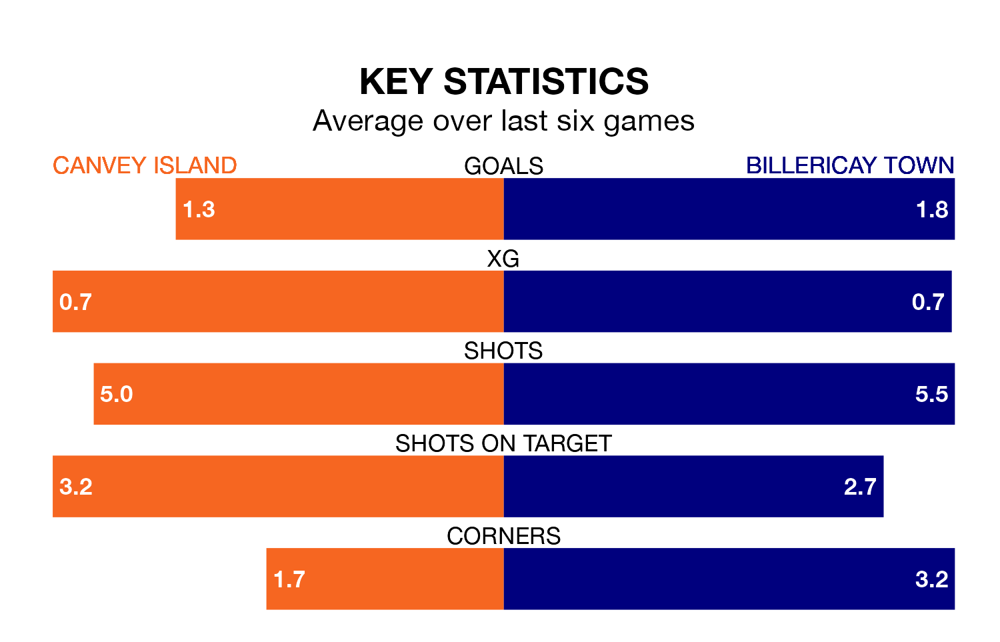

Billericay Town are strong favourites to take all three points despite Canvey Island's home advantage in Saturday's match at the Brockwell Stadium.
*Betting Company* are offering odds of 1.73 on Billericay sealing the win, with the visitors sitting third in the Isthmian Premier Division table.
Canvey Island, who are 13th in the league and 19 points behind Billericay, are priced at 3.75 to win. A draw is set at 3.75.
In the last 10 years, Canvey Island and Billericay have played each other on 10 occasions. They won five each.
On average, the Gulls scored 1.3 goals and Billericay 1.1 in those matches.
Their last meeting was on October 3, when Canvey Island won 1-0 away.
With 48 goals in 28 games so far this season, Billericay are scoring more than average in the league with 1.7 goals per game. And they are conceding fewer than average, letting in 22 goals at a rate of 0.8 per game.
Canvey Island, meanwhile, are below average scorers, with 1.5 goals per game, compared to a league average of 1.6. They have conceded 2.0 goals per game.
The Gulls are in mixed form in the Isthmian Premier Division, with three wins and three losses from their last six games.
With three wins and a draw over that period, Town's form is slightly better – they have taken 10 points from 18, compared to the hosts' nine.
Canvey Island's last match was on February 3, a 3-0 loss against Enfield Town.
Billericay beat Lewes 3-0 last time out, on Tuesday.
Updated: 11:43 (UTC), 08/02/24